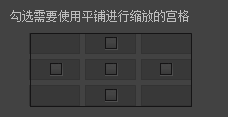
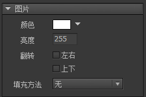
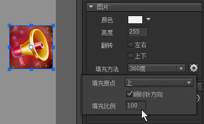

Guide

图片
图片是FairyGUI中最基础的元素，它的设计是尽量考虑到简洁而且高效的。因此，不提供修改图片源的功能，也不支持点击。如果需要动态更改，或者支持点击，请改用装载器。
图片属性
在资源库中，或者舞台上，双击图片，进入图片属性设置对话框：

图像大小图片的尺寸，像素大小。数据大小图片文件的大小，单位字节。如果出现有 xxx->xxx的字样，表示该图片被压缩过，前面数字是压缩前大小，后面的数字是压缩后大小。使用九宫格进行缩放九宫格绘制会遵循下面的规则：
a. 保持4个角部分不变形
b. 单向拉伸4条边（即在4个角两两之间的边，比如上边，只做横向拉伸）
c. 双向拉伸中间部分（即九宫格的中间部分，横向，纵向同时拉伸，PS：拉伸比例不一定相同）

（图片来自www.cocoachina.com）
如果你想九宫格中被拉伸的部分改用平铺进行填充，可以在下图的界面内勾选这些宫格：

使用平铺进行缩放图片拉伸时使用平铺模式进行填充。除了Flash和Haxe版本，应该尽量避免使用较小面积的图片平铺填充到较大的面积，因为这样会产生大量的网格，甚至可能溢出报错。如果你确实有这个需求，Unity版本提供了一种优化策略，你需要将这个图片设置为单独导出（下面的纹理集设置会说明），然后在Unity编辑器中，将这张纹理的Wrap Mode设置为Repeat。满足这两个条件后，使用这个图片进行平铺填充的性能会大大提高，而且不会出现溢出的异常。允许平滑这个选项适用于Flash和Starling版本。它指示图片在拉伸时是否进行平滑处理。如果这个图片是用在制作像素游戏里的角色，你可能需要关闭平滑，其他情况一般都应开启。质量这个选项适用于Flash和Haxe版本。你可以控制单个图片的压缩率，以便获得最优的质量空间比。改变选项后按“应用”可以立即观察到图片的变化，并在“数据大小”里观察压缩大小的成果。纹理集这个选项适用于使用纹理集的平台。一个包可以包含一张或多张纹理集，每个图片都可以安排放置到不同的纹理集。“单独”表示这个图片单独放置到一张纹理集，纹理集的大小是2的幂；“单独（NPOT）”表示这张图片按原大小直接输出。注意：在Unity中，非2的幂大小的纹理不支持压缩格式，只能为RGBA或RGBA。导入选择一个外部图片覆盖此图片。裁剪边缘空白将图片周围的全透明像素（Alpha=0）永久剪除。图片可能变小。
实例属性
在舞台上选中一个图片，右边的属性面板列表出现：

颜色修改图片各个颜色通道的值，使图片产生变色的效果。这个功能的原理是设置三角形的顶点颜色。（注：Egret、Laya版本目前是通过滤镜实现的，效率较低，不推荐使用此功能）。亮度调整图片的明暗。这个实际是通过修改颜色属性实现的，和设置颜色为灰阶颜色一样的效果。例如设置颜色为0xCCCCCC，和设置亮度为0xCC是相同的效果。翻转将图片水平翻转或垂直翻转。与设置Scale为-1的传统翻转方法不同，这里的翻转是渲染级别的翻转，不涉及到矩阵变换，不受轴心、坐标等影响，如果需要图片翻转建议使用这里的选项。（注：Egret、Laya版本未能实现这个特性，现在是通过设置Scale为-1实现的，因此尽量避免使用这个选项，如果要使用，请不要再使用Scale值）。填充方法设置填充方法可以实现图片的一些裁剪效果。（注：仅Starling、Unity版本支持）水平

垂直

90度

180度

360度

GImage
图片我们一般不直接使用new来创建，也很少有需要单独创建图片的需求。它一般直接放置在其他组件中作为组成元素。如果确实需要实例化一个图片，可以使用以下方法：
|
图片作为UI的一个基础组成元素，它的设计首先是考虑到简单高效，所以是不提供API修改图片的。如果有动态更改图片的需求，应该改为使用装载器（GLoader）。
在Unity平台中，如果在某些特殊场合需要将Texture2D对象赋予给GImage，可以这样做：
|
再次强调，这种需求仍然是建议尽量使用装载器实现。